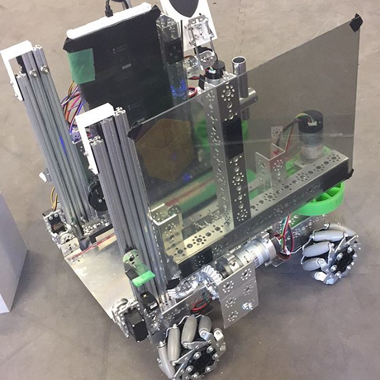

FRC 167 Documentation
Welcome to the FRC 167 Documentation! In writing these docs, our team has two main motivations:
With each graduating class, it seems like we lose lots of collective knowledge. This limits the success of the team in the future since members spend time relearning concepts and repeating mistakes of the past. The COVID-19 pandemic has exacerbated this effect by limiting the time veteran members have to train new members and robbing everyone of experience. Preventing this from happening will help our team become more competitive.
In addition, certain subteams on our team regularly have trouble effectively teaching new team members. For instance, the programming subteam struggles to teach new members how to code when lots of people come in with absolutely zero experience. This causes many new members to quit the team because they struggle to find a role for themselves. Fixing this will promote the long-term health of the team.
To solve these issues, we've created these docs. They are an ever-expanding record of how different parts of our team operate and what people need to know to succeed. The goal is to teach new members how to be useful on the team and to prevent knowledge from being lost when old members graduate.
Since this is primarily intended for internal use by team 167, there might be some sections that do not apply to other teams. Nevertheless, the vast majority of the content should be applicable to most FRC teams. So, if you'd like to use this as a resource for your team, feel free.
Whenever possible, chapters in these docs are self-contained. For instance, the Java Basics chapter doesn't rely on knowledge from any other chapters. In fact, it could be used by someone learning Java outside of an FRC context. However, a few chapters rely heavily on others. For example, knowledge of Java and the FRC control system is necessary for understanding the chapter on FRC Programming. When it is the case that one chapter relies on another, it will be noted in the chapter overview.
We hope you find this resource useful! If you'd like to contribute, it is open-source. Check out the section on contributing for more information.
FRC Basics
This chapter will introduce general FRC topics. For new members on the team, this is a good place to start. The chapter will explain what the team does and define important terms for talking about FRC.
FIRST and FRC
This section will discuss what FRC is and how it fits into FIRST's set of programs and goals.
FIRST
FIRST (For the Inspiration and Recognition of Science and Technology) is a global nonprofit organization headquartered in Manchester, NH. According to its website:
FIRST inspires young people to be science and technology leaders and innovators by engaging them in exciting mentor-based programs that build science, engineering, and technology skills, that inspire innovation, and that foster well-rounded life capabilities including self-confidence, communication, and leadership.
In summary, FIRST promotes STEM education by organizing robotics programs for students of all ages. Their three programs are FIRST LEGO League, FIRST Tech Challenge, and FIRST Robotics Competition.
FIRST LEGO League
FIRST LEGO League (FLL) is a program for kids from preschool to eighth grade. It is subdivided into three programs: FLL Discover (Pre-K - Grade 1), FLL Explore (Grades 2 - 4), and FLL Challenge (Grades 4 - 8). The first two divisions are simply research and exploration challenges for young students. FLL Challenge is a competition where teams work with LEGO MINDSTORMS kits and block programming to complete various tasks on a tabletop.
FIRST Tech Challenge
FIRST Tech Challenge (FTC) is a robotics competition for students from grades 7 to 12. Teams consist of up to 15 students. Originally, the program was designed to offer a cheaper alternative to FRC for schools that wanted a robotics program but couldn't afford FRC. However, it has since established itself as a strong and independent program. FTC students design robots to fit in an 18" cube and program their robots with block programming or Java. Then, they compete against other teams in a 2v2 format. Teams also work to raise money, do outreach events at local schools, and create an engineering notebook.
FIRST Robotics Competition
FIRST Robotics Competition (FRC) is FIRST's flagship robotics program. It is for students from grades 9 to 12, and adults (e.g. teachers, engineers, etc.) work with the students. Team sizes vary—in fact, some teams have nearly 100 students—but most teams have around 30 students. Each team designs and builds a 125 lb robot and programs in Java, C++, or LabVIEW. Then, teams compete in a 3v3 format. FIRST's website reads:
We call FIRST Robotics Competition the ultimate Sport for the Mind. High-school student participants call it "the hardest fun you’ll ever have." It's as close to real-world engineering as a student can get.
In addition to engineering, FRC teams work year-round to raise funds, do outreach events, and develop a team brand.
Which program is right for me?
Since FLL doesn't have any overlap with FRC by age range, we will focus on the differences between FRC and FTC. In general, FRC is like FTC but bigger: FRC robots are heavier and more powerful, FRC teams and events are larger, FRC budgets are more expensive, etc. In our school district, there is one FTC team at each high school and one FRC team shared by all the high schools.
Below is a table comparing the FTC and FRC programs in our school district.
| Criterion | FTC | FRC |
|---|---|---|
| Team(s) |
| Children of the Corn (167) |
| Students Per Team | Up to 15 | 30+ |
| Meeting Location | At school | Kirkwood Regional Center |
| Competition Season | September - February | January - April |
| Robot Dimensions | 18" x 18" x 18" | 30" x 30" x 84" |
| Robot Weight | 30 lbs (roughly) | 125 lbs |
| Programming Language | Java | Java |
| Field Dimensions | 12' x 12' | 27' x 54' |
| Event Locations | School gyms and hotels | Arenas and convention centers |
| Team Budget | $4,000 | $40,000 |
| Robot Picture |  |  |
Season Timeline
This section will go over the different parts of a typical FRC season.
Preseason
The preseason lasts from September to December. During this time, teams recruit new members, develop technical skills, and raise money to fund the rest of the season. This part of the year normally involves a couple meetings per week, but it is much more relaxed than the build season and the competition season.
Build Season
The build season runs from January through April. This is the time of year when teams actually work on a robot for competition.
The build season begins with kickoff on a Saturday in early January. At kickoff, FIRST livestreams the year's game animation, which gives a brief overview of the challenge for robots that year. FIRST also releases the game manual, which is a long document (normally around 135 pages) that explains the game in great detail. As an example, here is the 2020 game animation, and here is the 2020 game manual.
Immediately after kickoff, teams work to prioritize what challenges in the game they want to address. Then, they begin designing, prototyping, building, wiring, programming, and testing. This part of the season requires a large time commitment. Our team often meets five days each week at the beginning of the build season. By the end, we sometimes have to meet every day to get ready for competitions in time.
Competition Season
The competition season goes from early March to late April. This overlaps with the end of the build season, so after a competition, a team can improve its robot to better prepare for the next competition.
There are six weeks of official competition prior to the world championship every year. These run from early March to early April. Most years, our team competes in two regional competitions. These competitions normally involve traveling on Wednesday, practicing on Thursday, and competing on Friday and Saturday. We return Saturday or Sunday depending on how long it takes to drive home. Some common destinations for our regional competitions are Cedar Falls, La Crosse, and Duluth.
Teams that win certain awards at regional competitions (such as winning the event or winning the Chairman's award) qualify for the FIRST Championship. There are actually two championship events that take place in different weeks at the end of April: one in Houston and one in Detroit. The championship a team attends depends on where the regional at which they qualify is located. Our regionals almost always qualify us for the championship in Detroit.
Worlds is slightly longer event than a regional competition. We normally travel on Tuesday, practice on Wednesday, and compete on Thursday, Friday, and Saturday.
*Some places have don't have regional competitions. Instead, they have district competitions, which are shorter. Then, teams advance to the district championship based on a complicated point system. The best teams at the district championship advance to worlds. One place that uses this model is Michigan, but since Iowa does not, it is not directly relevant to our team.
Offseason
After the stress of the competition season, the offseason is much more lax. This part of the season takes place from May to August. Our team meets once a week, and we use the time to raise money, organize outreach events in the community, and plan summer camps.
FRC Resources
The FRC community is full of wonderful resources made available for free. These include workshops, forums, tutorials, and more. Many teams create their own resources for everyone to use, and there are also lots of resources maintained by the community collaboratively. Taking advantage of these resources is one of the best ways to improve as a team. Below are some great resources from the community that cover all sorts of topics. Resources specific to certain topics such as programming will be included in the relevant chapters.
If you don't want to look at all these resources, the most important ones to check out are the official resources, Chief Delphi, and The Blue Alliance.
Official Resources
-
FRC Blog
The FRC Blog contains official announcements from FIRST about FRC. -
STIMS
The Student Team Information Member System (STIMS) is the official student dashboard for FRC. To attend an official FRC competition, you must create an account, join a team, and have a parent or guardian complete a consent form. -
Season Materials
The season materials page has all the official documentation for the current season. This includes the game manual, the rule Q&A system, season logos, and more.
Community Resources
-
Chief Delphi
Chief Delphi (CD) is a forum for all things related to FRC. It is among the most useful resources listed here. During the build season, CD is full of ideas, prototypes, code samples, etc. to help with robot design. Throughout the year, it contains interesting discussions about robotics, fundraising, STEM, and more. -
The Blue Alliance
The Blue Alliance (TBA) provides detailed statistics about FRC teams and events (including offseason events). It has match schedules, live scoring, award history, robot pictures, and match videos. -
First Updates Now (Twitch, YouTube)
First Updates Now (FUN) produces content about FRC (and FTC). They host lots of workshops, interviews, and giveaways. They also do behind-the-scenes videos of different teams' robots. -
The Compass Alliance
The Compass Alliance is a group of experienced teams that provides resources in all subjects for beginner teams. The pathways section of their website in particular has lots of good tutorials. -
FRC Discord
The (unofficial) FRC Discord server is a great way to engage with other people in FRC. Lots of students, alumni, and mentors frequent the server, and there are channels for technical discussions, business discussions, and socializing. The community is quite friendly, and it is a good place to ask questions in a less formal setting than Chief Delphi. -
r/FRC
The FRC subreddit is mostly just memes, but there is the occasional serious discussion.
Team Resources
-
Citrus Circuits (1678)
The Citrus Circuits are an elite FRC team from Davis, California. Their website contains dozens of helpful workshops on topics like CAD, programming, strategy, scouting, fundraising, and outreach. -
The Cheesy Poofs (254)
The Cheesy Poofs are a hall of fame team from San José, California. They are typically regarded as the best team in the world. Their website has many resources—especially about software and CAD. -
Simbotics (1114)
Simbotics is an FRC hall of fame team from Ontario, Canada. Their website has lots of useful resources on a variety of topics.
Business
This chapter will go over important business topics such as how to interact with companies, how to raise money, how to do meaningful outreach, how to coordinate Junior Bots summer camps, how to write newsletters, and how to manage team social media accounts.
Awards
This chapter will discuss the different awards available in FRC. The primary focus of the chapter will be how to put together a winning Chairman's award submission, but there will also be sections about the Dean's List award and the Woodie Flowers award.
Design and CAD
This chapter will identify lots of useful resources for learning CAD (computer-aided design). Firstly, it will cover using Onshape (our team's CAD system of choice) in general. This includes making parts, versioning documents, and collaborating. Then, it will discuss FRC-specific CAD such as designing a drivetrain or an intake.
For many of you, this will be your first time working in CAD (at least since eighth grade). Accordingly, the chapter is designed for absolute beginners. If you have significant experience with another CAD system (e.g. Inventor, Fusion 360, SOLIDWORKS, etc.) and/or Git, you will breeze through the Onshape tutorials. If you have prior Onshape experience, you can probably skip straight to the FRC-specific sections.
After covering CAD, this chapter will discuss some important design principles. This includes general discussions of different subsystems as well as specific lessons learned from past mistakes.
Getting Started with Onshape
Why Onshape?
There are several reasons why our team uses Onshape instead of another CAD system such as Inventor, Fusion 360, or SOLIDWORKS:
-
Accessibility
Like most CAD software, Onshape is free for FRC teams, but unlike other CAD systems, Onshape is cloud-based. You can think of it as the Google Docs of CAD. This means that documents are accessible on all your devices. It also means you don't need a powerful PC to run it. In fact, you can use it on almost any device with a web browser—including a Chromebook. In light of the COVID-19 pandemic, this is essential because many students only have access to a school-issued Chromebook. -
Collaboration
In other CAD software, collaborating with others involves manually making copies of files, keeping track of several different versions, and manually combining the files into the final design. Onshape lets multiple people work on a single document simultaneously. In addition, saving is automatic, and versioning doesn't ever require duplicating files. -
Support
Onshape has terrific community support. Onshape itself has lots of useful tutorials for getting started. Additionally, the FRC community provides well-maintained parts libraries for COTS (Commercial-Off-The-Shelf) parts and FRC-specific tutorials.
Signing Up
To create a free Onshape education account, navigate here and click the button that says "Sign Up Now". Fill out the form following the on-screen instructions. You can use your personal email even though you're creating an education account. When it asks what you're using Onshape for, simply put "FIRST Robotics Competition".
Hardware Setup
Almost any computer can run Onshape. The most important thing is that you have a fast, stable internet connection.
Although Onshape runs in the cloud, rendering still takes place on your computer. If you have your own computer, it will probably run Onshape better than a school-issued Chromebook.
Onshape's rendering process uses a technology called WebGL. You must enable this technology for Onshape to work properly. Making sure WebGL is enabled is simple. If you are using Google Chrome, follow these directions:
Note that you might not find the settings explained below on a school-issued Chromebook. If this is the case, you should be fine because WebGL is already enabled.
- Launch Chrome settings by going to chrome://settings
- Click "System" under the "Advanced" dropdown
- Ensure "Use hardware acceleration when available" is enabled
- Relaunch Chrome so any changes take effect
- Check if WebGL is enabled here
If you are using another browser, or if WebGL remains disabled, follow the instructions here.
If you have both integrated and discrete graphics, then you should make sure Onshape uses discrete graphics. Specific instructions for this depend on your graphics card, but general instructions are available here.
Onshape Tutorials
Onshape provides hours of free tutorials through the Onshape Learning Center. These tutorials are self-guided, meaning there is no instructor or specific time to take the tutorials. Instead, you watch videos, take short quizzes, and complete practice projects. These projects are the most important part of the tutorials. They give you lots of chances to practice and apply your skills.
The following courses will cover all the essentials you need to be productive in Onshape. They are grouped into four sections, and you should complete them in order. You might notice some redundancies throughout courses; that is, some courses will repeat content from previous courses. This is generally good because it gets you extra practice.
While working on these courses, you will probably find things that are unclear. If this happens, do not worry. You will almost always be able to continue with a limited understanding, and a future course will better explain whatever you are struggling to understand.
Introduction to Modeling
This section will quickly introduce the basics of CAD and the steps involved in creating a model in Onshape.
-
Introduction to Parametric Feature-Based CAD
This course will test your spatial reasoning ability, explore the Onshape interface, and discuss how Onshape documents are structured. -
Introduction to Part Design
In this course, you will practice creating parts using sketches and features. One thing you should know before beginning this course (that the videos fail to mention) is that "normal" is a fancy word for perpendicular. -
Introduction to Assembly Design
You will learn how to assemble parts and how to allow or restrict motion between parts in this course.
Advanced Modeling
This section will take a much more in-depth look at the modeling skills covered in the previous section.
-
Introduction to Sketching
In this course, you will get more practice creating sketches and learn some more advanced sketching techniques. -
Part Design Using Part Studios
This course will showcase lots of different features you can use to customize your parts. You will get lots of practice creating parts in several projects. -
Multi-Part Part Studios
In this course, you will learn how to create multiple parts in one part studio. This is one of Onshape's defining features. -
Onshape Assemblies
You will get more practice creating assemblies and learn a few other assembly techniques in this course.
Miscellaneous
This section will cover some important features and best practices to keep in mind while using Onshape. At times, these courses will feel too simple, but they are important nonetheless.
-
Navigating Onshape
This course will explain how to use the Onshape interface and how to efficiently navigate models. -
Sharing and Collaboration
This course will discuss Onshape's collaboration features. -
Document Management
In this course, you will learn best practices for staying organized in Onshape.
Version Control
This section will discuss how to version documents and how to deal with other documents from within Onshape and from other CAD systems.
-
Document History and Revisions
In this course, you will learn the basics of creating versions of a document. -
Branching and Merging
You will learn how to create multiple workspaces, which allows multiple users to edit a document without interfering with each other's work, in this course. -
Linked Documents
In this course, you will learn how to use parts from other people's documents (such as parts libraries). -
Importing and Exporting Data
This course will explain how to import/export data from/to other CAD systems.
Installing MKCad and FRC FeatureScripts
FRC CAD Tutorials
Build
This chapter will talk about different types of tools, how to use tools safely, and how to stay safe during COVID-19.
Electrical
This chapter will explain how to wire a robot and use pneumatics.
Java Programming
This chapter will introduce the fundamentals of the Java programming language. For many of you, this will be your first time coding, so the chapter is designed for someone with absolutely no prior experience. However, if you have experience in another language—or even if you have Java experience but need a refresher—these lessons will still be helpful to you too.
The concepts introduced in these lessons will cover roughly the same content as the AP Computer Science A curriculum. If you have yet to take that class, these tutorials will prepare you well. If you are currently enrolled, you will find that these tutorials complement your coursework nicely. If you have already taken the class and remember most of it, then you probably don't need these tutorials, but it wouldn't hurt to scan them and see if there are any unfamiliar concepts.
The first couple of lessons in this chapter will cover some general programming concepts, what makes Java different than other programming languages, and how to set up your computer to begin writing code. After those, the remaining lessons will follow a simple pattern of one lesson followed by one programming exercise. This way, after learning new concepts, you can practice them by writing actual code to complete projects.
Although this documentation is intended for FRC teams, this chapter can be used for learning Java outside of an FRC context. Only a few passing references are made to FRC, and they are unnecessary for understanding the content of the chapter.
What is Java?
Before writing any code, it is good to have a general idea of what computer programming is in the first place. This lesson will go over what programming languages do and how they interact with computers. In addition, it will explain what sets Java apart from other languages and why it is useful. Finally, this lesson will discuss how Java is used in the real world and in FRC.
What are Programming Languages?
Even though modern computers may seem to be incredibly powerful and intelligent machines, they are really quite stupid. Computers take instructions from a computer program and interpret them literally. To illustrate this, think about the following sentence:
I saw a person on a hill with a telescope.
What does this sentence mean? Assuming you have a working knowledge of the English language, the sentence probably makes sense to you. However, different people may come to different conclusions about its meaning because it is totally ambiguous. A few possible meanings of the sentence include:
- I saw the person. The person was on the hill. I was using a telescope.
- I saw the person. I was on the hill. I was using a telescope.
- I saw the person. The person was on the hill. The hill had a telescope.
- I saw the person. I was on the hill. The hill had a telescope.
- I saw the person. The person was on the hill. The person was using a telescope.
Indeed, the message conveyed by the sentence depends on the person reading it and the context of the sentence. We take advantage of this when speaking English, but computers don't have such a luxury: they cannot use context when interpreting programs, so programs must be unambiguous. Computers have to interpret programs exactly the same way every single time. One could only imagine the consequences if the computers controlling air traffic or nuclear weapons behaved unpredictably due to differences in context.
The result of this is that computer programs are very specific sets of instructions. Computers interpret programs literally so that they execute precisely the same way every single time. The part of the computer responsible for interpreting and executing computer programs is known as the central processing unit (CPU).
A CPU takes takes computer programs in the form of machine code and sends electrical signals to execute the programs. Machine code is written in binary (0s and 1s), so it is totally incomprehensible to humans. As a result, we have developed what are known as higher-level programming languages. The higher-level a programming language is, the easier it is for humans to read and write.
Systems programming languages like C and C++ tend to be the lowest-level languages that humans work with frequently. They are readable by humans, but they are still fairly complicated. They tend to be used in situations where performance (execution speed) is important such graphic-intensive games or database software.
Above low-level languages like C and C++ are high-level languages like Java, Python, and Ruby. These languages are easier to read and write than low-level languages, but they are normally slower. In addition, they give the programmer far less direct control over the computer. There are some things that you simply cannot do in a high-level language like Java that you can in C++.
Why use Java?
If C and C++ are readable by humans and faster than Java, why would anyone use Java? There are a couple of reasons why people frequently use high-level languages like Java. Firstly, as mentioned already, even though humans can read and write C and C++, it is easier to read and write Java since Java is higher-level. Besides this, in many cases, the difference in speed between C or C++ and Java is unimportant. The final reason that Java is so popular is its philosophy of "write once, run anywhere".
To understand this principle, you first must understand how programs written in low-level languages are executed. To run a C program, one must compile it. A compiler translates code in a language like C to machine code that the CPU can execute directly.
Now, think about all the different computers you have. If you have a laptop and a smartphone, they almost certainly have different CPUs inside. Your laptop almost certainly has a CPU made by Intel or AMD, and your phone probably has a CPU made by Apple, Qualcomm, or Samsung. Although it may seem like it, none of these CPUs functions in exactly the same way. Different CPUs have different types of machine code because they have different sets of instructions they can execute. Desktop/laptop CPUs normally have large instruction sets (x86) to maximize performance while mobile CPUs often have small instruction sets (ARM) to improve battery life.
Since different CPUs have different types of machine code, a program compiled from C on one computer might not run correctly on another computer (if it runs at all). Even though the C code is the same, the compiled machine code is different. This means that a program compiled from C cannot easily be shared with other people; their computers might not execute it the same way.
The Java philosophy of "write once, run anywhere" means that after writing and compiling Java code, the same compiled program can run on any computer. The way Java does this is with an intermediate language called Java bytecode. When you compile a Java program, it gets translated into Java bytecode—not machine code. Then, the Java bytecode can be distributed to any computer with a Java Virtual Machine (JVM) installed. The JVM executes Java bytecode by converting it into machine code for the specific CPU. This means that the only people who have to worry about the differences between different CPUs are the people who create the JVM.
One limitation you might think of to this process is that to run a Java bytecode program, a computer must have a JVM installed. However, Java is so ubiquitous that most computers have it. Indeed, lots of computers come with it preinstalled.
There are two main software packages that contain a JVM. The Java Runtime Environment (JRE) is intended for consumers. It contains a JVM and several other libraries required to run Java bytecode. The other package is the Java Development Kit (JDK), which is intended for programmers. The JDK includes the JRE and a compiler to translate Java into Java bytecode.
Java Today
Java is not the only language to abide by the "write once, run anywhere" principle. There are other programming languages that are compiled into Java bytecode and executed on the JVM. This includes languages like Scala, Kotlin, and Clojure. Each of these languages is newer than Java and improves on some of its flaws.
Despite the existence of these newer languages, Java still haas a large presence in technology throughout the world. In fact, according to the TIOBE index (a measure of programming language popularity), Java is the second most-used programming language in the world (as of May 2020). The only language more popular is C. Lots of older code is written in Java and needs to be maintained; it would be too expensive to completely rewrite it in another language. In addition, new applications are written in Java all the time. Fields in which Java is common include web development, Android apps, and business applications.
For the FIRST Robotics Competition, teams can use Java, C++, or LabVIEW. Our team uses Java for a plethora of reasons. LabVIEW is a graphical programming language developed by National Instruments (the company that makes the roboRIO), and it is meant to be easy for rookie teams to use, but its graphical syntax makes it cumbersome for experienced teams like us. C++ is a very powerful and popular language, but it is needlessly complicated for our team. In addition, its extra speed compared to Java is unnecessary for FRC. Most importantly, the AP Computer Science classes in our school district teach Java, so we have far more people with experience in it than in C++.
Hello World
In this lesson, we will go over how to set up Repl.it and use it to write and execute Java programs.
Why use Repl.it?
Repl.it is an online Java editor (it works with other programming languages too, but we're just using it for Java). As such, it lets you write and run Java programs from any computer. Think of it as Google Docs but for programming in Java. If you read What is Java? (which you should have), then you know that to write and run Java code, you need a JDK installed. Repl.it comes with a JDK built-in, so compiling and executing a Java program is as simple as clicking a button. These features are great for learning because they make getting started incredibly simple. This is why we will use Repl.it in these lessons.
However, rarely do professionals use Repl.it for writing their code. There are a few reasons for this. The first is that Repl.it is slow. When learning, it doesn't feel overly slow, but when writing large applications with lots of files, it slows down, and the small delays add up. Another reason that few professionals use Repl.it is it stores your code on the cloud. This poses a potential security issue for people working on private software or dealing with classified information. The final (and most significant) reason that Repl.it doesn't work for professionals is that it doesn't offer enough flexibility. Professionals need to be able to have complete control over the computers they write their code on. Without going into too much detail, certain types of programming are difficult or impossible using Repl.it. For instance, developing robot code for FRC is not really possible using Repl.it (the chapter on FRC programming explains how to set up another editor).
A Tour of Repl.it
To get started, go to repl.it on your computer and click the button in the top right corner to create an account. You can sign in with Google or use your email address.
Each project on Repl.it is called a repl. You will create a new repl for each of the projects in this chapter. Once your account is created, click the button that says "+ new repl" in the top right corner. You should see a few options for your repl. For the language, pick "Java". Be careful as there are several other options with Java in the name including "JavaScript", "Java Swing", and "Java Processing using Processing.js". These options are all incorrect. For the project name, pick whatever makes sense to you. It is important to give your projects meaningful names to keep your code organized in case you need to look back at it. I suggest you name this project "HelloWorld". Assuming you are on the free plan for Repl.it, you must leave your repl accessible to the public, but that won't be a problem.
 A new Java repl called HelloWorld
A new Java repl called HelloWorld
Once your repl is created, you should see a screen something like this. There are a few important parts of this interface that you should know about.
At the top is the menu bar. The left of the menu bar lets you navigate back to your profile so you can see all your other repls. The large button in the center labeled "run" compiles and executes your code. Finally, the buttons on the right side of the menu bar let you share your repl with other people or create a new repl.
Looking to the left side of the screen, there is a thin, vertical strip with four icons. The topmost icon shows/hides the files in your repl. The only file that should exist if you just created the repl is Main.java. The next two icons are unimportant for this chapter. The last icon contains project settings. You should probably leave them alone except for light/dark mode and font size depending on your personal preferences.
On the left side of the screen after the list of files (which may be hidden), there is a large pane called the editor. This is where you write your code. A new Java repl should start with a little bit of code in Main.java. It should look something like this:
class Main {
public static void main(String[] args) {
System.out.println("Hello world!");
}
}
On the right side of the screen is a large pane called the console. This is where the results of your program will appear. It is also where you can input data to your program if necessary (e.g. if your program asks for your username, you can type it in the console). If you haven't run a program yet, the console should begin with something like OpenJDK Runtime Environment (build 11.0.6+10-post-Ubuntu-1ubuntu118.04.1). If you have run a program, you can refresh the page, and the console should reset to that text. Taking a look at the text, OpenJDK is the type of JDK that is compiling and running your code. The version of Java is 11.0.6 (it might be a higher version for you). As of June 2020, FRC uses Java 11, so everything you learn using Repl.it should be valid FRC code.
When you are ready, you can run the program by clicking the "run" button on the menu bar. After a few seconds, you should see the text Hello world! appear in the console (note that there might be a few lines of gibberish before it). Congratulations on running your first bit of Java code! At this point, you can confirm Repl.it is working properly. As a general rule, problems caused by Repl.it can be fixed by refreshing the page.
Take a few minutes to explore the Repl.it interface. Make sure you're comfortable with creating projects, locating existing projects, and running your code. Once you feel ready, you can move on to the next lesson. There, you'll start learning to actually write code!
Printing and Commenting
To begin, this lesson will take a look at the Hello world! program you created in the previous lesson. We will cover important points about the structure of that program. Then, we will discuss how you can print whatever text you want to the console. Finally, we will talk about commenting your code.
Hello World!
Go ahead and create a new Java Repl. I suggest you call it PrintingAndComemnting. Just like in the last lesson, there should be a little bit of autogenerated code:
class Main {
public static void main(String[] args) {
System.out.println("Hello world!");
}
}
To a beginner, this program looks very intimidating. Don't worry though—you don't have to understand any of it yet. We won't even cover what some parts of it do until several lessons later. With that in mind, there are a few things that are important for you to take note of. One important idea is syntax highlighting. Practically all editors, including Repl, make different parts of your code appear in different colors. This is to help you identify sections of code and easily diagnose errors.
Another important thing to notice is the indentation. Inside each set of curly braces ({ and }), the level of indentation increases by one unit. In this case, one unit is equal to two spaces since that is the default setting for Repl.it. The specific amount of indentation is unimportant (programmers often disagree about one tab, two spaces, three spaces, four spaces, or eight spaces), but it is critical that within a program, you are consistent. Properly indenting your code makes it much easier to read.
All Java programs begin with a main method. The main method starts on the second line where it says public static void main(String[] args) {. Everything after the { but before the } is inside the main method. This means that the only thing currently inside the main method is the third line which reads System.out.println("Hello world!");.
The third line is an example of a statement. Statements in Java are specific instructions. You can think of them as commands to the computer. For instance, the statement on the third line tells Java to put the text from inside the quotes in the console. In this case, the text is Hello world!, so Hello world! gets printed in the console.
All statements inside the main method are executed in order. Currently, there is only one statement inside the main method, so it gets executed first, but if there were another statement before it, then that would be executed first.
Statements always end in a semicolon (;). If you try removing the semicolon at the end of the third line and running the program, it will not compile. Repl.it will print an error message in the console instead:
Main.java:3: error: ';' expected
System.out.println("Hello world!")
^
1 error
compiler exit status 1
This error is fairly simple, but reading error messages is an important skill. The first line of the error message is the most important. It says that there is an error in the file Main.java on line 3. The compiler expects a semicolon there, but there isn't one. Then, the error message points to where a semicolon should be at the end of the line. Next, the compiler says there was 1 error in total. If we had multiple errors in our code, that number would be higher. Finally, it says the compiler exited with status code 1. Status codes indicate whether or not the program finished running. If a program exits with status code 0, that means it finished as expected. If a program exits with any nonzero status code, there was an error somewhere that prevented it from finishing properly. Because we are missing a semicolon at the end of line 3, the compiler exited with status code 1.
If you put the semicolon back where the error message tells you, the program will run again, printing Hello world! to the console.
Basic Printing
Now that you have a general idea about how Java programs execute, you can start printing other text to the console. As discussed in the previous section, statements in the main method are executed sequentially. If we want to print Hello world! to the console twice, we just need to duplicate the statement that prints it, and the two statements will be executed one after another. The following program prints Hello world! to the console twice:
class Main {
public static void main(String[] args) {
System.out.println("Hello world!");
System.out.println("Hello world!");
}
}
The statement System.out.println("Hello world!"); prints whatever is inside the quotation marks to the console. Then, it jumps to the next line. This is why the output of the program looks like this:
Hello world!
Hello world!
A statement similar to println exists which prints the text inside the quotation marks but does not jump to the next line after that. To print just the text inside the quotes, you can write System.out.print("Hello world!");. If we modify our program from above, changing println to print, we get the following output:
Hello world!Hello world!
This output makes sense because there are no newlines involved in the print statement.
As you have probably figured out by now, we can print other text to the console by simply changing what is inside the quotes. Try to figure out what the following program would print to the console (make sure to take whitespace and newlines into account):
class Main {
public static void main(String[] args) {
System.out.println("FRC Team 167 is the oldest robotics team in Iowa.");
System.out.print("It was founded in 1998. ");
System.out.println("In 2020, the team won the Lake Superior Regional.");
}
}
Click to reveal the answer
FRC Team 167 is the oldest robotics team in Iowa.
It was founded in 1998. In 2020, the team won the Lake Superior Regional.
The first statement prints the text FRC Team 167 is the oldest robotics team in Iowa. followed by a newline since it is a println statement (println stands for "print line"). The second statement prints It was founded in 1998. . Notice there is a space at the end because there is a space before the closing quotation mark in the statement. Additionally, notice that there is not a newline character at the end because we used print instead of println. As such, the last statement starts printing on the same line the second statement left off on. It prints the text In 2020, the team won the Lake Superior Regional. followed by a newline.
Escape Sequences
Take a look at the following program. Can you guess what it prints to the console?
class Main {
public static void main(String[] args) {
System.out.println("MLK said, "The time is always right to do what is right."");
}
}
The syntax highlighting shows us that something is wrong. We can confirm this by trying to compile the program. The compiler complains about several errors (if you try compiling it yourself, notice that the compiler incorrectly identifies what the error is, so you need to identify and fix it yourself). In this case, the error is that we used a " in the text we were trying to print. The compiler thought that the " at the beginning of MLK's quote signified the end of the text we wanted to print. Then, it encountered a bunch of unknown words outside of quotations marks. It didn't know what to do, so it said there were several errors.
We can get around this error by using escape sequences. These allow us to use special characters in text. The backslash character (\) indicates that we want to start an escape sequence. For instance, we can use \" in our text to print the " character. This means that the correct program to print MLK's quote looks like this:
class Main {
public static void main(String[] args) {
System.out.println("MLK said, \"The time is always right to do what is right.\"");
}
}
If we want to manually insert a newline in a string of text, we can do so using the \n escape sequence. For instance, consider the following program:
class Main {
public static void main(String[] args) {
System.out.println("This\nis\nsome\ntext.");
}
}
The output of the program looks like this:
This
is
some
text.
Using the \n escape sequence, you can mimic the behavior of the println statement using print. System.out.println("This is some text."); and System.out.print("This is some text.\n"); are equivalent. However, the println statement is preferred because it is more readable.
To print the backslash character itself, you need to escape the backslash with another backslash. This means that to print \, you must use \\ inside your quotes.
There are several other escape sequences in Java. You have learned the most important ones, but if you're curious, you can check out this website to learn the others.
Comments
Comments allow us to write notes to ourselves in our code. We can use them to explain what code does or why we made a particular decision to do something in a certain way. In small programs like those you are writing right now, they often seem pointless, but in large applications, they are super important for figuring out what is going on. If you ever come back to code you wrote six months ago or if you have to use code someone else wrote, comments help you figure out what the code is doing.
There are three types of comments in Java. The first type is a single-line comment. Single-line comments begin with //. After that, you can write anything you want for the rest of the line, and the compiler will ignore it. For instance, the following program contains a comment explaining what the print statement is doing:
class Main {
public static void main(String[] args) {
// This print statement prints newlines using \n
System.out.println("This\nis\nsome\ntext.");
}
}
The second type of comment is a multi-line comment. Multi-line comments are enclosed in /* and */. Anything between will be ignored by the compiler. This program showcases a multi-line comment:
class Main {
public static void main(String[] args) {
/* This is an example of
a comment that spans
multiple lines.
*/
System.out.println("This\nis\nsome\ntext.");
}
}
The final type of comment is a special type of multi-line comment called JavaDoc. We won't discuss this now because it requires learning about objects and methods first.
Project: Face Printing
This project will test your skills using Repl, printing text to the console, and commenting your code. Since it is the first project of the chapter, it will be fairly brief.
Assignment
The goal of this project is to print the following image and caption to the console:
/////
| |
| " " |
| o o |
(| ^ |)
| \_/ |
-----
A "drawing" of a face
To begin, create a Repl called FacePrinting. Find a way to print the text to the console. Even though it is not actually necessary, make use of a mix of println and print statements to get practice with both. You will have to use a few escape sequences in this project. Also, be mindful of the whitespace in the text. For example, there is a blank line between the image and the caption.
Add a multi-line comment at the beginning of your code that contains your name and grade in school. Then, use single-line comments to explain what part of the body is printed by each println and print statement.
Output
This embedded Repl illustrates what your program should print to the console once it works correctly. However, keep in mind that comments are part of this assignment too, so you might not be quite done just because your output looks like this.
Reference Implementation
There are an infinite number of ways to implement this program. However, if you are stuck, you can look at the reference implementation below to see one way of doing it.
Click to reveal the reference implementation
class Main {
public static void main(String[] args) {
/*
Dominic Rutkowski
12th Grade
*/
// This statement prints the hair
System.out.println(" /////");
// This statement prints the forehead
System.out.println(" | |");
// This statement prints the eyebrows and eyes
System.out.print(" | \" \" |\n | o o |\n");
// This statement prints the nose
System.out.print("(| ^ |)");
// This statement prints the mouth
System.out.println("\n | \\_/ |");
// This statement prints the chin and a blank line
System.out.println(" -----\n");
// This statement prints the caption
System.out.println("A \"drawing\" of a face");
}
}
Variables
This lesson will focus on variables. We will begin by looking at what variables are and how to create them. We will then talk about important data types and how to perform arithmetic operations on numerical data types. We will also look at constants and where they should be used.
Variables and Data Types
Fundamentally, every computer program manipulates some sort of input to produce some sort of output. For instance, a video game takes signals from the keyboard and mouse and uses them to determine movement and other actions to be performed. Likewise, a robot program takes signals from a controller and readings from various sensors. It converts these to many outputs such as motor speeds. To manipulate inputs and determine outputs, programs need to store data.
In Java, we can store data using variables. Every variable has a type, a name, and a value. For example, imagine a program wanted to store a user's age. The data type of the variable would be an integer (a number without a decimal) because ages are represented as integers. The name of the variable might be something like userAge. The value of the variable would be 42 (or however old the user is).
For the sake of brevity, from here on out, you can assume that all code samples are inside the
mainmethod unless otherwise specified.
You can express the scenario about a user's age in Java with the following code:
int userAge = 42;
Let's consider another scenario: a program wants to store a user's bank account balance in a variable. The variable's data type would be a double (a number with a decimal). The name would be something like balance or accountBalance. Finally, the value would be any amount of money such as $1.67.
We can express this situation in Java like this:
double accountBalance = 1.67;
When we create a variable and give it an initial value, we are said to have initialized the variable. In general, to initialize a variable in Java, you write:
type name = value;
Before we go into more detail about what we can do with variables, we should discuss variable types and names. The data types in the following table are the most important ones to know. They will appear in almost every program. If you're curious about other Java data types, you can read about them here.
| Type | Definition | Example Values |
|---|---|---|
int | A number without a decimal | 0, 42, -3 |
double | A number with a decimal | 3.14, -2.718, 1.0 |
boolean | True or false | true, false |
char | One character in single quotes | 'a', 'B', '_', '7' |
String | A sequence of text in double quotes | "This is a string", "" |
One important thing to take note of is that int, double, boolean, and char all start with a lowercase letter. This is because they are primitive types. In contrast, String starts with an uppercase letter because it is an object type. We will discuss what that means in a later lesson, but for now, just know that a bit of text is a String—not a string.
Variable names can contain letters, numbers, and the underscore character (_). They cannot start with a number, and they are case sensitive, so accountBalance and aCcOuNtBaLaNcE are different. Variable names should describe the data stored in the variable. For instance, a variable containing an account balance should be called accountBalance instead of x.
In Java, variable names are normally written in camelCase. This means that the first word is lower case, and each word thereafter begins with a capital letter. There are no spaces since spaces are not allowed in variable names. userPassword, studentGrade, and name are examples of camelCase names.
You might occasionally see variable names in snake_case, where every letter is lower case and words are separated by underscores. However, camelCase is more common in Java. Most people who use snake_case used it in another programming language and kept using it when they learned Java.
Reading Variables
After creating a variable, its value can be accessed by simply writing the variable name. For instance, the following program prints the value of the variable answer, which is 42:
int answer = 42;
System.out.println(answer);
Notice that answer is not in double quotes. If you write System.out.println("answer");, it literally prints the word answer to the console instead of the value of the variable answer.
If you want to combine text (using the String type) and variable values, you can use the + operator. Consider the following program:
int answer = 42;
System.out.println("The answer is " + answer + ".");
This program prints The answer is 42. to the console. We will discuss other uses of the + operator and other operators later in the section.
Updating Variables
After initializing a variable, you can change its value using a similar syntax but without the data type. For instance, the following program initializes an integer variable called grade to the value 87. Then, it updates the variable's value to 93 and prints 93 to the console.
int grade = 87;
grade = 93;
System.out.println(grade);
The reason that you don't need to use the data type when updating a variable value is that the data type cannot change. Therefore, the compiler already knows the data type. Consider the following program:
int gradeLevel = 10;
gradeLevel = "sophomore";
If we try to compile this program, we get the following error:
Main.java:4: error: incompatible types: String cannot be converted to int
gradeLevel = "sophomore";
^
Java knows that the variable gradeLevel is an integer, so it requires that the new value of gradeLevel also be an integer. Since it cannot find a way to convert the string "sophomore" to an integer, it fails to compile and gives an error.
Uninitialized Variables
You just learned that variables can be initialized with the type name = value; syntax. However, it is also possible to create variables without a value. This is called declaring a variable:
String favoriteColor;
This code sample creates a variable named favoriteColor with a type of String. It does not have an initial value. We can give it a value with the same name = value; syntax we used to update variables. Giving a variable a value or updating its value is called assigning a value to a variable. In fact, initializing a variable is simply a way to declare the variable and assign it a value in one line.
Trying to access the value of an uninitialized variable is an error. Consider the following program:
double price;
System.out.println("The price is " + price);
This code results in the following compilation error:
Main.java:4: error: variable price might not have been initialized
System.out.println("The price is " + price);
^
This error makes sense because if there isn't a price for an item, we can't print what the price is. The Java compiler catches this mistake for us so we can fix our code instead of showing users a missing price.
Basic Arithmetic Operators and Casting
You already learned that the + operator can be used to combine text with variable values. However, it can also be used to add two numbers together. Consider the following code sample:
int apples = 4;
int oranges = 9;
int fruits = apples + oranges;
System.out.println("There are " + fruits + " fruits.");
This program prints There are 13 fruits.. Similarly, the - and * operators can be used for subtraction and multiplication, respectively.
The / operator is used for division. However, it doesn't behave exactly as you might expect. Consider the following program which divides a $70 bill among 4 friends:
int bill = 70;
int friends = 4;
double cost = bill / friends;
System.out.println("Each person has to pay $" + cost);
You would expect the program to print Each person has to pay $17.5 since 70 divided by 4 is 17.5. Instead, it prints Each person has to pay $17.0. Why might this be?
When dividing two integers, Java makes the quotient an integer by truncating everything after the decimal point. In effect, this means that Java rounds positive quotients down and negative quotients up. Since bill and friends are both integers, Java rounds the result (17.5) down to 17. Then, 17 is automatically converted to the double 17.0 since cost is of type double.
To avoid this behavior, we can make either bill or friends a double instead of an integer:
double bill = 70.0;
int friends = 4;
double cost = bill / friends;
System.out.println("Each person has to pay $" + cost);
Alternatively, we can cast either bill or friends as a double. Casting is the process by which Java converts one data type to another. To cast a variable variable as a new type type, you write:
(type) variable
For instance, to cast bill as a double inside the division, you can write:
int bill = 70;
int friends = 4;
double cost = (double) bill / friends;
System.out.println("Each person has to pay $" + cost);
Since bill is cast as a double, Java is diving a double by an integer. When division involves a double, the result is a double. Therefore, the result of the division is 17.5 as expected. So, the program correctly prints Each person has to pay $17.5.
More Operators
There are a few more things about operators and arithmetic you should know before moving on.
Firstly, the modulo operator (%) calculates the remainder in integer division. For example, the following code sample prints The remainder is 1:
int remainder = 5 % 2;
System.out.println("The remainder is " + remainder);
Secondly, arithmetic assignment operators make certain operations easier. To add 2 to the value of a variable sum, you might write:
int sum = 4;
sum = sum + 2;
System.out.println(sum);
The above code sample prints 6 as desired. Arithmetic assignment operators simplify lines like this. Using an arithmetic assignment operator, you can write:
int sum = 4;
sum += 2;
System.out.println(sum);
The += operator, which is called the addition assignment operator, tells Java to add 2 to the value of sum and make that the new value of sum.
Other arithmetic operators have assignment versions as well. The following code samples both print The answer is 1:
int answer = 0;
answer = answer + 10; // 10
answer = answer * 2; // 20
answer = answer - 5; // 15
answer = answer / 3; // 5
answer = answer % 2; // 1
System.out.println("The answer is " + answer);
int answer = 0;
answer += 10; // 10
answer *= 2; // 20
answer -= 5; // 15
answer /= 3; // 5
answer %= 2; // 1
System.out.println("The answer is " + answer);
Since the + operator can combine strings, += appends content to the end of a string. Consider the following program:
String message = "Hello ";
String name = "Tom";
message += name;
message += "! How are you?"
System.out.println(message);
This program prints Hello Tom! How are you? to the console.
Thirdly, the increment and decrement operators (++ and --) provide an even shorter way to add or subtract 1 from a variable. The following program initializes value to 0. Then, it adds 1 to value twice and subtracts 1 from value once. Therefore, it prints 1 to the console:
int value = 0;
value++; // 1
value++; // 2
value--; // 1
System.out.println(value);
Although the increment and decrement operators work on doubles, they are generally only used on integers.
Finally, you should be aware that Java follows PEMDAS for order of operations (we haven't discussed exponents yet). This means that you can use parentheses to specify the order of operations. In fact, it is often a good idea to do this even if it isn't strictly necessary. It makes your code easier to follow and protects it from changes which might inadvertently impact the order of operations.
Constants
As discussed earlier, variable values can be reassigned. Most of the time, this is the desired behavior, but sometimes, we want to store values that cannot change. To illustrate the reasoning behind this, think about designing a program that calculates the areas of several circles given their radii:
Recall that the formula for the area \( A \) of a circle with radius \( r \) is given by: \[ A = \pi r^2 \]
System.out.println("A circle with a radius of 3 has an area of " + (3.14 * 3 * 3));
System.out.println("A circle with a radius of 4 has an area of " + (3.14 * 4 * 4));
System.out.println("A circle with a radius of 5 has an area of " + (3.14 * 5 * 5));
In this example, if we wanted to increase the precision of \( \pi \) from 3.14 to 3.14159, we'd have to update it in three different places. To solve this, we can create a variable called pi that stores the value of \( \pi \). Then, we only have to update the value in one place whenever we adjust the precision:
double pi = 3.14159;
System.out.println("A circle with a radius of 3 has an area of " + (pi * 3 * 3));
System.out.println("A circle with a radius of 4 has an area of " + (pi * 4 * 4));
System.out.println("A circle with a radius of 5 has an area of " + (pi * 5 * 5));
Now, our code looks much better. We can change the precision of \( \pi \) in just one place, and it will update everywhere. There is one problem, however. The value of pi can be changed at any time. For instance, the following program uses two different values of pi, so the areas of the circles are calculated inconsistently:
double pi = 3.14159;
System.out.println("A circle with a radius of 3 has an area of " + (pi * 3 * 3));
pi = 3.14;
System.out.println("A circle with a radius of 4 has an area of " + (pi * 4 * 4));
System.out.println("A circle with a radius of 5 has an area of " + (pi * 5 * 5));
The first circle's area is calculated with the more precise value of \( \pi \), and the second and third circles' areas are calculated with the less precise value of \( \pi \). To prevent a variable from being reassigned, you can use the final keyword. The final keyword creates a constant, which is a variable whose value cannot change. The following code sample illustrates how constants work:
final double PI = 3.14159;
System.out.println("A circle with a radius of 3 has an area of " + (PI * 3 * 3));
PI = 3.14;
System.out.println("A circle with a radius of 4 has an area of " + (PI * 4 * 4));
System.out.println("A circle with a radius of 5 has an area of " + (PI * 5 * 5));
In this example, the compiler gives us an error because we try to change the value of a final variable. To make this code compile, we must remove the line that reassigns the value of PI. Therefore, the following program will compile and run correctly:
final double PI = 3.14159;
System.out.println("A circle with a radius of 3 has an area of " + (PI * 3 * 3));
System.out.println("A circle with a radius of 4 has an area of " + (PI * 4 * 4));
System.out.println("A circle with a radius of 5 has an area of " + (PI * 5 * 5));
This code sample solves our problem by preventing the value of PI from changing in the middle of the program.
Note that constants have different naming conventions than mutable variables (variables whose values can change). Constants are often written in SCREAMING_SNAKE_CASE. This means that every letter is capitalized, and underscores separate words. Another acceptable way to name constants is with regular camelCase prefixed with a k. For instance, the name of a constant that stores the maximum speed might be MAX_SPEED or kMaxSpeed. It is important to choose one convention and stick with it within a project.
This example is somewhat contrived, so it doesn't fully illustrate the importance of constants. When you begin to work on larger projects, it will become clearer how helpful it is to mark variables whose values shouldn't change as final.
Conditionals
This is a test page. This page will explain how to use if statements and switch blocks.
Loops and Recursion
This is a test page. This page will explain while loops, do while loops, for loops, and recursion.
Object-Oriented Basics
This is a test page. This page will explain the basics of object-oriented programming.
Visibility and Statics
This is a test page. This page will explain visibility modifiers, the static keyword, and the singleton design pattern.
Polymorphism
This is a test page. This page will explain what polymorphism is and how to use it including interfaces, inheritance, and abstract classes.
Arrays and Collections
This is a test page. This page will explain arrays and important collections including ArrayLists, Stacks, and Queues.
Miscellaneous
This is a test page. This page will explain relevant topics that don't fit into another page or provide resources for them. Some ideas for topics include variadic arguments, multithreading, generics, lambda functions, and initializer blocks.
FRC Programming
This chapter will talk about FRC programming. This includes updating control system firmware, controlling different actuators, organizing robot programs, and using PID controllers.
Git
This chapter will explain how to use Git and GitHub to track version history and collaborate with others. It will also introduce command line basics in the process.
Web Development
This chapter will cover the basics of HTML, CSS, and JavaScript so that people can update the team website. It will also discuss Node.js, Express, and SQL databases so that people can develop the scouting app.
Scouting and Strategy
This chapter will talk about designing and utilizing a scouting app effectively. It will also talk about competition roles and advancement to worlds.
Contribute
We welcome any relevant contributions to these docs! If you want to contribute, the GitHub repository is available here. The contribution guidelines are available here. This includes an explanation of the project structure and the build process.